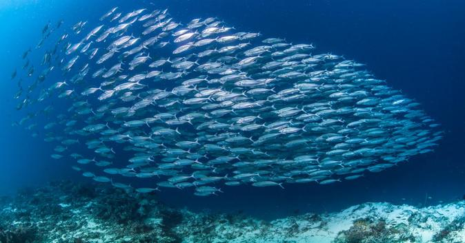

Fish

All fish share two traits: they live in water and they have a backbone—they are vertebrates.
Apart from these similarities, however, many of the species in this group differ markedly from one another. Fin fish like salmon have gills, are covered in scales, and reproduce by laying eggs. Eels, by contrast, have worm-like bodies and exceedingly slimy skin. Lungfish gulp air. Whale sharks, the largest fish, give birth to live young and eat only tiny fish, squid, and plankton. Some species, such as the weedy sea dragon, are so bizarre they seem almost unreal.
Fish have developed special senses, too. Because water transmits sounds, disperses chemicals, and conducts electricity better than air, fish rely less on their vision and more on their hearing, taste, and smell. Many can detect motion in the water using a special row of scales with sensors known as the lateral line. Others can find their prey and even navigate by detecting electrical charges.
One reason fish are so diverse is that 70 percent of the planet is covered in water. The animals in this group live in a variety of habitats ranging from coral reefs and kelp forests to rivers, streams, and the open ocean. Another is that fish are very old on the evolutionary scale. According to fossil records, they have been on Earth for more than 500 million years! The total number of living fish species—about 32,000— is greater than the total of all other vertebrate species (amphibians, reptiles, birds, and mammals) combined.
Fish
The fish species in the lake consist primarily of
- lake trout
- Pike
- Yellow perch
- Whitefish
- with some Rainbow trout
- bass
- Kokanee salmon
- Bull trout
The lake trout in Flathead Lake can reach monstrous sizes
and frequently exceeding twenty-pounds.